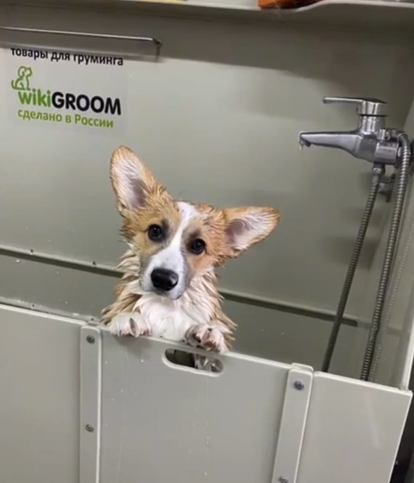
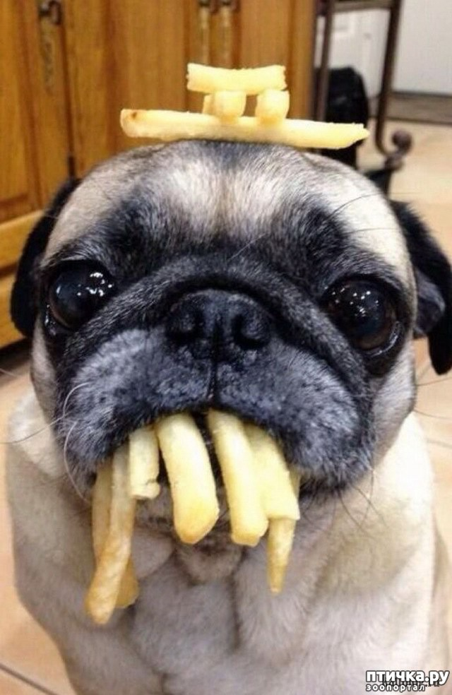
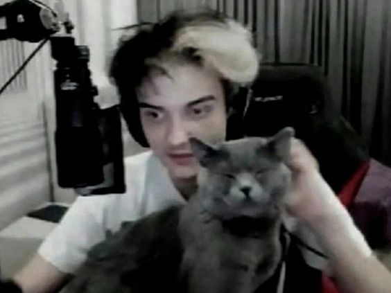

В нашем груминг-центре предлагаем профессиональную стрижку и гигиенические процедуры для породистых собак.
Стрижка

Мы выполняем стрижку собак с учётом особенностей породы и индивидуальных потребностей.
Гигиенические процедуры
Гигиенические процедуры включают чистку ушей, стрижку когтей и уход за шерстью для поддержания здоровья питомца.
Другие процедуры
Мы также предлагаем дополнительные услуги, такие как сушка феном, расчёсывание и обработка от паразитов.
-
Почему выбирают нас:
Опытные мастера с зоологическим образованием
Наши специалисты имеют высокую квалификацию и большой опыт работы с породистыми собаками.
Индивидуальный подход к каждому животному
Мы учитываем индивидуальные особенности каждой собаки и подбираем оптимальные процедуры для её здоровья и комфорта.
Забота о здоровье питомцев
Мы используем только безопасные и качественные средства для ухода, которые не вызывают аллергии и не вредят здоровью животных.
-
Отзывы наших клиентов:
Профессиональный подход и уютная атмосфера. Мой питомец чувствует себя комфортно и расслабленно. Спасибо!
--->Серега ПиратРегулярный клиент
Отличная работа мастеров! Мой питомец выглядит ухоженным и счастливым. Буду рекомендовать друзьям.
--->Егор ЕгоровПостоянный клиент
Очень довольна качеством услуг. Мой питомец стал выглядеть гораздо лучше после посещения груминг-центра.
--->Александр ХертекПостоянный клиент
Очень доволен работой грумеров. Мой питомец чувствует себя комфортно, а качество стрижки на высоте. Рекомендую!
 --->Илья КоробкинПостоянный клиент
-
Наш груминг-центр «Чистый хвост» предлагает профессиональные услуги по стрижке и поддержанию гигиены породистых собак. Мы руководствуемся принципами заботы и комфорта для каждого питомца, используя только проверенные методы и качественные средства.